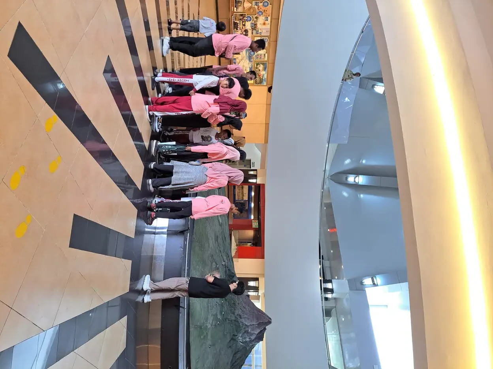

Bahasa isyarat tuna rungu adalah bahasa visual yang lengkap, punya kosakata dan tata bahasa sendiri, dan bukan sekadar terjemahan kata per kata dari bahasa lisan. Ia dipahami lewat mata, dibentuk oleh gerakan tangan, posisi tubuh, dan ekspresi wajah, lalu tersusun mengikuti aturan yang tidak selalu sama dengan bahasa Indonesia. Di Indonesia ada dua hal yang sering tertukar, yaitu BISINDO yang tumbuh alami di komunitas Tuli, dan SIBI yang merupakan sistem buatan untuk mengiringi struktur bahasa Indonesia di ruang kelas. Memahami perbedaan keduanya membantu keluarga memilih jalur yang tepat, dan memberi anak bahasa yang benar-benar bisa ia serap sejak dini.
Bahasa Isyarat Adalah Bahasa Utuh
Kesalahpahaman paling mendasar tentang bahasa isyarat adalah menganggapnya sebagai kumpulan gerakan yang mewakili kata-kata bahasa lisan. Bukan begitu cara kerjanya.
Bahasa isyarat alami punya kosakata sendiri, aturan pembentukan kalimat sendiri, dan cara sendiri menandai waktu, jumlah, serta hubungan antarbagian kalimat. Struktur kalimatnya tidak wajib mengikuti urutan bahasa lisan di sekitarnya. Ia memanfaatkan ruang di depan tubuh sebagai bagian dari tata bahasa, misalnya untuk menunjuk siapa melakukan apa kepada siapa, sesuatu yang tidak punya padanan langsung dalam bahasa bicara.
Bahasa isyarat juga tidak universal. NIDCD mencatat bahwa bahasa isyarat berbeda dari satu negara ke negara lain, dan bahkan negara yang berbahasa lisan sama bisa punya bahasa isyarat yang sama sekali berbeda. Jadi tidak ada satu bahasa isyarat sedunia yang bisa dipakai di mana saja.
Beberapa konsekuensi penting dari kenyataan ini:
- Menghafal kamus isyarat tidak sama dengan menguasai bahasa isyarat, sebagaimana menghafal kamus tidak membuat orang lancar berbahasa asing.
- Menerjemahkan kalimat Indonesia kata per kata ke isyarat sering menghasilkan kalimat yang janggal bagi penutur Tuli.
- Anak yang lancar berbahasa isyarat adalah anak yang berbahasa, meski suaranya jarang terdengar.
Menempatkan bahasa isyarat sebagai bahasa, bukan sebagai alat bantu darurat, mengubah cara kita mendampingi anak Tuli sejak hari pertama.

Lima Komponen Pembentuk Satu Isyarat
Sebagaimana kata dalam bahasa lisan tersusun dari bunyi, satu isyarat tersusun dari beberapa komponen yang bekerja bersamaan. Mengubah salah satu komponennya bisa mengubah maknanya sepenuhnya.
1. Bentuk tangan
Konfigurasi jari dan telapak, misalnya telapak terbuka, kepalan, jari telunjuk menunjuk, atau jari membentuk huruf tertentu. Ini komponen yang paling mudah dikenali pemula.
2. Lokasi
Tempat isyarat diartikulasikan, apakah di depan dada, di dekat kepala, di pipi, atau di ruang netral depan tubuh. Dua isyarat dengan bentuk tangan sama tetapi lokasi berbeda bisa berarti dua hal yang jauh berbeda.
3. Gerakan
Arah, jalur, dan pengulangan gerak. Gerakan lurus, melingkar, berulang, atau berhenti tajam masing-masing membawa informasi. Kecepatan dan besar kecilnya gerakan juga bisa menandai penekanan.
4. Orientasi telapak
Arah hadap telapak tangan, apakah menghadap ke atas, ke bawah, ke depan, atau ke tubuh pengisyarat. Komponen inilah yang paling sering terlewat oleh pemula, padahal sering menentukan makna.
5. Penanda non-manual
Ekspresi wajah, alis, gerak kepala, arah pandang, dan gerak mulut. Komponen ini bukan bumbu, melainkan bagian dari tata bahasa.
Karena lima komponen ini bekerja serempak, belajar bahasa isyarat lewat foto diam punya batas yang nyata. Video dan latihan langsung dengan penutur Tuli jauh lebih efektif, karena gerakan dan ekspresi hanya bisa ditangkap dalam gerak.
Ekspresi Wajah Bukan Hiasan
Banyak pemula fokus melatih tangan dan lupa wajahnya. Padahal dalam bahasa isyarat, wajah mengerjakan banyak tugas gramatikal yang dalam bahasa lisan dikerjakan oleh intonasi dan partikel.
Beberapa fungsi penanda non-manual:
- Membedakan pertanyaan dari pernyataan. Posisi alis dan arah kepala bisa mengubah kalimat yang sama menjadi tanya atau berita.
- Menandai negasi. Gelengan kepala yang berjalan bersamaan dengan isyarat menyampaikan penyangkalan.
- Menandai derajat dan intensitas. Ekspresi wajah menunjukkan apakah sesuatu sedikit, sangat, atau berlebihan.
- Menandai kondisi dan pengandaian. Alis terangkat di awal kalimat bisa menandai anak kalimat.
- Menandai topik pembicaraan. Kombinasi pandangan dan posisi kepala menunjukkan bagian mana yang sedang jadi fokus.
Karena itu, berisyarat dengan wajah datar sering membuat pesan jadi ambigu atau terdengar dingin bagi lawan bicara Tuli. Ini juga alasan mengapa juru bahasa isyarat yang baik terlihat sangat ekspresif. Mereka tidak sedang berlebihan, mereka sedang mengerjakan tata bahasa.
Untuk orang tua, kabar baiknya adalah komponen ini justru yang paling alami dipelajari. Kita sudah terbiasa berekspresi ketika bicara dengan anak kecil. Tugasnya hanya membiarkannya keluar sepenuhnya, bukan menahannya karena merasa canggung.
BISINDO, Bahasa Alami Komunitas Tuli Indonesia
BISINDO adalah singkatan dari Bahasa Isyarat Indonesia. Ia tumbuh secara alami di kalangan komunitas Tuli Indonesia, sebagaimana bahasa daerah tumbuh di kalangan penuturnya, tanpa dirancang lebih dulu oleh sebuah lembaga.
Istilah BISINDO pertama kali dipakai dalam resolusi kongres ke-7 Gerakan untuk Kesejahteraan Tunarungu Indonesia (Gerkatin) yang diselenggarakan di Makassar pada 2006. Sejak itu BISINDO diteliti dan dikembangkan oleh Pusat Bahasa Isyarat Indonesia (Pusbisindo) bersama laboratorium riset bahasa isyarat di lingkungan perguruan tinggi.
Satu hal yang perlu dipahami sejak awal: BISINDO punya keragaman antardaerah. Perbandingan leksikal antara ragam yang dipakai di Jakarta dan Yogyakarta menunjukkan sekitar 65 persen kesamaan kosakata, dengan perbedaan tata bahasa yang nyata. Urutan kata di ragam Yogyakarta cenderung menempatkan verba di akhir, sementara ragam Jakarta cenderung menempatkannya di tengah. Perbedaan ini bukan tanda ada yang salah, melainkan ciri wajar bahasa yang hidup.
Ada pula perdebatan di kalangan peneliti dan komunitas tentang apakah ragam-ragam ini sebaiknya dibakukan menjadi satu, atau justru dipromosikan apa adanya sebagai kekayaan daerah. Pandangan yang belakangan banyak didukung adalah membiarkan ragam daerah tetap unik tanpa harus dipaksa seragam.
Untuk keluarga, implikasinya praktis: belajarlah BISINDO ragam daerah tempat anak Anda akan bergaul. Kalau anak tumbuh di Yogyakarta, ragam yang dipakai komunitas Tuli Yogyakarta adalah yang paling berguna baginya sehari-hari.
SIBI, Sistem Isyarat yang Mengikuti Bahasa Indonesia
SIBI adalah singkatan dari Sistem Isyarat Bahasa Indonesia. Berbeda dari BISINDO, SIBI bukan bahasa alami melainkan sistem buatan yang dirancang untuk mengiringi struktur bahasa Indonesia.
Perbedaan paling mencolok ada pada imbuhan. SIBI memakai isyarat khusus untuk morfem imbuhan seperti awalan dan akhiran, mengikuti kaidah bahasa Indonesia. Akibatnya satu kata berimbuhan bisa memerlukan beberapa gerakan berurutan, dan kalimat SIBI menjadi jauh lebih panjang dibanding kalimat dalam bahasa isyarat alami seperti BISINDO.
SIBI dibakukan untuk kepentingan pendidikan, terutama agar guru dapat menyajikan bahasa Indonesia tulis secara visual di kelas. Sampai kini SIBI masih menjadi sistem yang dipakai di banyak sekolah luar biasa di Indonesia.
Kritik yang sering muncul dari komunitas Tuli bukan soal niat baiknya, melainkan soal beban pemakaiannya. Kalimat yang panjang membuat percakapan melambat, dan struktur yang meniru bahasa lisan tidak selalu selaras dengan cara berpikir visual. Banyak anak akhirnya memakai SIBI di kelas, lalu beralih ke BISINDO ketika bergaul dengan teman sesama Tuli.
Cara paling jernih mengingat bedanya: BISINDO adalah bahasa yang dipakai orang untuk hidup bersama, SIBI adalah sistem yang dibuat untuk mengajarkan bahasa Indonesia secara visual. Keduanya punya tempat, tetapi hanya salah satunya yang tumbuh dari komunitas penuturnya sendiri.
Membandingkan BISINDO dan SIBI
Berikut ringkasan perbandingan yang bisa dipakai orang tua ketika berbicara dengan sekolah atau terapis.
| Aspek | BISINDO | SIBI |
|---|---|---|
| Sifat | Bahasa alami | Sistem buatan |
| Asal | Tumbuh di komunitas Tuli Indonesia | Dirancang untuk keperluan pendidikan |
| Tata bahasa | Punya tata bahasa visual sendiri | Mengikuti tata bahasa Indonesia lisan |
| Imbuhan | Tidak diisyaratkan satu per satu | Diisyaratkan dengan gerakan khusus |
| Panjang kalimat | Relatif ringkas | Lebih panjang |
| Keragaman daerah | Ada, dan diakui sebagai kekayaan | Dibakukan secara nasional |
| Pemakaian utama | Percakapan sehari-hari komunitas Tuli | Ruang kelas dan bahan ajar |
Pertanyaan yang layak diajukan ke sekolah anak Anda:
- Sistem apa yang dipakai guru di kelas sehari-hari?
- Apakah ada guru atau pendamping yang menguasai BISINDO?
- Bagaimana sekolah memfasilitasi anak berkomunikasi dengan teman sebayanya saat istirahat?
- Apakah sekolah terbuka bila keluarga memakai BISINDO di rumah?
Anak yang memakai dua sistem sekaligus tidak akan bingung selama salah satunya benar-benar lancar. Yang berbahaya bukan dua bahasa, melainkan setengah-setengah di keduanya.
Mengapa Paparan Bahasa Sejak Dini Menentukan
Tahun-tahun pertama kehidupan adalah masa ketika otak paling siap menyerap bahasa. Anak dengar mendapatkan paparan itu secara otomatis, dari percakapan yang mengalir di sekelilingnya sepanjang hari, bahkan ketika tidak ada yang sengaja mengajarinya.
Anak Tuli tidak mendapat paparan otomatis itu. Kalau tidak ada yang berisyarat di sekitarnya, ia bisa melewati bertahun-tahun tanpa akses penuh ke bahasa apa pun. Ini yang membuat bahasa isyarat mendesak, bukan opsional.
Bahasa isyarat memberi anak sesuatu yang tidak bisa ditunggu, yaitu alat untuk berpikir, bertanya, menolak, dan bercerita. Dengan bahasa isyarat, anak bisa punya kosakata dan konsep yang utuh sejak dini tanpa bergantung pada seberapa berhasil alat bantu dengarnya bekerja. Ketika kemudian bicara lisan dilatih, fondasi konsep itu justru mempermudah prosesnya.
WHO mencatat bahwa gangguan pendengaran yang tidak ditangani berdampak pada kemampuan komunikasi, akses pendidikan, dan kehidupan sosial. Dampak itu bukan akibat langsung dari tidak mendengar, melainkan akibat tidak mendapat bahasa. Perbedaan cara memandang ini penting, karena mengarahkan tindakan keluarga ke hal yang benar.
Karena itu prinsip yang aman dipegang sederhana: jangan menunggu apa pun untuk mulai memberi anak bahasa. Jangan menunggu hasil tes final, jangan menunggu alat bantu dengar turun, jangan menunggu anak cukup umur. Mulai dari hari ini, dengan apa pun yang Anda punya.
Cara Keluarga Mulai Belajar Bahasa Isyarat
Belajar bahasa baru sebagai orang dewasa memang tidak mudah, apalagi sambil mengurus rumah dan mendampingi terapi. Tetapi Anda tidak perlu fasih dulu untuk mulai berguna bagi anak.
- Cari kelas yang diampu pengajar Tuli. Belajar langsung dari penutur asli memberi Anda ekspresi, ritme, dan kebiasaan berbahasa yang tidak ada di buku. Pusat Bahasa Isyarat Indonesia (Pusbisindo) dan komunitas Tuli di berbagai kota menyelenggarakan kelas semacam ini.
- Mulai dari kosakata yang benar-benar dipakai anak. Nama anggota keluarga, makanan favorit, mainan, perasaan, dan kegiatan harian jauh lebih berguna daripada daftar kata acak.
- Libatkan seluruh anggota rumah. Ayah, kakak, adik, dan pengasuh perlu ikut. Kalau hanya satu orang yang bisa berisyarat, dunia bahasa anak hanya sebesar satu orang itu.
- Berisyarat sambil bicara di awal. Ini memudahkan anggota keluarga yang baru belajar dan tetap memberi anak masukan visual, meski nanti idealnya Anda bisa berisyarat sepenuhnya.
- Latih dalam rutinitas, bukan sesi khusus. Waktu makan, mandi, dan sebelum tidur adalah laboratorium bahasa yang berulang setiap hari.
- Pakai video, bukan hanya gambar diam. Gerakan dan ekspresi hanya bisa ditangkap dalam gerak.
- Terima kalau Anda akan salah. Anak dan komunitas Tuli umumnya sangat menghargai usaha. Kesalahan Anda jauh lebih ringan akibatnya dibanding diam.
Bila anak juga sedang menjalani terapi lain, koordinasikan kosakata yang dipakai agar konsisten. Peta pilihan terapi bisa dilihat di artikel macam-macam terapi pada anak, sementara prinsip menjadikan orang tua sebagai mitra bicara utama dibahas di Hanen Approach.
Kesalahpahaman yang Masih Sering Terdengar
Beberapa keyakinan keliru masih beredar luas, bahkan di kalangan tenaga pendidik. Meluruskannya membantu keluarga mengambil keputusan yang lebih tepat.
- Bahasa isyarat itu universal. Tidak. Setiap negara punya bahasa isyaratnya sendiri, dan di dalam satu negara pun bisa ada ragam daerah yang berbeda.
- Bahasa isyarat adalah pantomim. Sebagian isyarat memang menyerupai bentuk benda yang diwakilinya, tetapi sebagian besar bersifat konvensional dan harus dipelajari, sebagaimana kata dalam bahasa lisan.
- Bahasa isyarat hanya untuk yang tidak bisa bicara sama sekali. Banyak orang Tuli memakai bahasa isyarat sekaligus bisa bersuara. Keduanya bukan pilihan yang saling meniadakan.
- Berisyarat membuat anak berhenti berusaha bicara. Anak butuh bahasa untuk berpikir. Bahasa isyarat memberi fondasi konsep yang justru menopang perkembangan bahasa secara keseluruhan.
- Cukup guru di sekolah yang bisa berisyarat. Anak menghabiskan jauh lebih banyak jam di rumah. Kalau di rumah tidak ada bahasa, sekolah tidak akan sanggup menutupi selisihnya.
- Bahasa isyarat itu bahasa yang lebih sederhana. Bahasa isyarat mampu menyampaikan gagasan abstrak, humor, sindiran, dan argumen ilmiah, sama seperti bahasa lisan mana pun.
Meluruskan enam hal ini saja sudah mengubah banyak keputusan yang diambil keluarga dan sekolah dalam setahun pertama.
Komunitas dan Sumber Belajar di Indonesia
Sumber belajar bahasa isyarat yang paling berharga bukan aplikasi, melainkan manusia. Komunitas Tuli menyediakan sesuatu yang tidak bisa diberikan kamus mana pun, yaitu bahasa yang hidup, teman sebaya, dan contoh orang dewasa Tuli yang mandiri.
Jalur yang bisa ditempuh keluarga:
- Kelas bahasa isyarat komunitas. Pusat Bahasa Isyarat Indonesia (Pusbisindo) dan komunitas Tuli di berbagai kota membuka kelas BISINDO yang diampu pengajar Tuli.
- Organisasi Tuli. Gerkatin dan jaringan komunitas daerahnya sering menjadi pintu masuk untuk mengenal kegiatan dan jadwal kelas setempat.
- Sekolah luar biasa dan sekolah inklusi. Selain menjadi tempat belajar anak, sekolah kerap punya jaringan ke komunitas dan terapis di wilayahnya.
- Kegiatan bersama anak lain. Anak perlu bertemu anak Tuli lain agar bahasanya punya lawan bicara sebaya, bukan hanya orang dewasa.
Dari sisi hak, Undang-Undang Nomor 8 Tahun 2016 tentang Penyandang Disabilitas menjadi rujukan utama, dan Peraturan Pemerintah Nomor 13 Tahun 2020 mengatur kewajiban satuan pendidikan menyediakan akomodasi yang layak bagi peserta didik penyandang disabilitas, termasuk dukungan komunikasi bagi anak tunarungu. Peraturan Pemerintah Nomor 42 Tahun 2020 melengkapi dengan pengaturan aksesibilitas pada pelayanan publik.
Yayasan Ukhuwah Kaffah Amanatullah (YUKA) di Yogyakarta mendampingi anak berkebutuhan khusus beserta keluarganya melalui pendidikan, pembinaan, dan kegiatan yang memperluas pengalaman anak. Bila Anda baru mulai, memulai percakapan dengan lembaga pendamping biasanya jauh lebih ringan daripada mencari sendirian. Perlu ditegaskan pula bahwa tulisan ini bersifat edukatif dan tidak menggantikan pemeriksaan atau saran profesional yang menangani anak Anda secara langsung.
Pertanyaan yang Sering Diajukan
Apakah bahasa isyarat sama di seluruh dunia?
Tidak. NIDCD mencatat bahwa bahasa isyarat berbeda antarnegara, dan negara yang berbahasa lisan sama pun bisa punya bahasa isyarat yang sama sekali berbeda. Di Indonesia sendiri ada ragam daerah, misalnya ragam yang dipakai di Jakarta dan di Yogyakarta memiliki sekitar 65 persen kesamaan kosakata dengan perbedaan tata bahasa yang nyata.
Apa perbedaan utama BISINDO dan SIBI?
BISINDO adalah bahasa alami yang tumbuh di komunitas Tuli Indonesia dan punya tata bahasa visual sendiri. SIBI adalah sistem buatan yang mengikuti struktur bahasa Indonesia, termasuk mengisyaratkan imbuhan seperti awalan dan akhiran, sehingga kalimatnya menjadi jauh lebih panjang. BISINDO dipakai untuk percakapan sehari-hari komunitas Tuli, sementara SIBI dibakukan untuk keperluan pendidikan dan masih dipakai di banyak sekolah luar biasa.
Apakah orang tua yang bisa mendengar perlu belajar bahasa isyarat?
Sangat perlu. Anak menghabiskan jauh lebih banyak waktu di rumah dibanding di sekolah atau ruang terapi, sehingga rumah adalah tempat bahasanya benar-benar terbentuk. Bila hanya satu orang di rumah yang bisa berisyarat, anak hanya punya satu pintu untuk seluruh isi kepalanya. Idealnya seluruh anggota keluarga ikut belajar, meski dengan kecepatan yang berbeda-beda.
Berapa lama waktu yang dibutuhkan untuk bisa berbahasa isyarat?
Sama seperti bahasa lain, kelancaran membutuhkan waktu bertahun-tahun. Namun Anda tidak perlu menunggu fasih untuk mulai berguna bagi anak. Menguasai beberapa puluh isyarat yang benar-benar dipakai sehari-hari, lalu memakainya konsisten di rumah, sudah membuka jalur komunikasi yang sebelumnya tertutup. Kemajuan terbesar biasanya datang dari latihan rutin harian, bukan dari kursus intensif sesekali.
Apakah bahasa isyarat membuat anak sulit belajar membaca dan menulis?
Tidak. Anak yang punya bahasa yang kuat justru punya modal konsep dan kosakata untuk memahami teks. Kesulitan membaca pada anak Tuli lebih sering berakar pada kurangnya paparan bahasa sejak dini, bukan pada penggunaan bahasa isyarat. Membaca dan menulis tetap perlu diajarkan secara terstruktur, dan bahasa isyarat menjadi jembatan untuk menjelaskan maknanya.
Di mana keluarga bisa belajar BISINDO di Indonesia?
Kelas BISINDO umumnya diselenggarakan oleh Pusat Bahasa Isyarat Indonesia (Pusbisindo) dan komunitas Tuli di berbagai kota, dengan pengajar yang merupakan penutur Tuli. Organisasi seperti Gerkatin beserta jaringan daerahnya juga sering menjadi pintu masuk untuk mengetahui jadwal kelas dan kegiatan setempat. Selain itu, sekolah luar biasa dan sekolah penyelenggara inklusi biasanya punya jaringan ke komunitas di wilayahnya.
Sumber Resmi dan Referensi
Artikel ini menggunakan sumber publik yang mendukung informasi kesehatan dan pendidikan:
- NIDCD (NIH): American Sign Language
- World Health Organization: Deafness and hearing loss
- World Health Organization: World report on hearing
- Pusbisindo: Pusat Bahasa Isyarat Indonesia
- Wikipedia bahasa Indonesia: Bahasa Isyarat Indonesia
- Peraturan RI: UU No. 8 Tahun 2016 tentang Penyandang Disabilitas
- Peraturan RI: PP No. 13 Tahun 2020 tentang Akomodasi yang Layak untuk Peserta Didik Penyandang Disabilitas
- Peraturan RI: PP No. 42 Tahun 2020 tentang Aksesibilitas bagi Penyandang Disabilitas
Disclaimer Medis dan Pendidikan: Artikel ini bersifat edukasi umum dan bukan pengganti diagnosis, terapi, atau konsultasi profesional. Untuk keputusan kesehatan anak, konsultasikan dengan dokter atau tenaga profesional yang berwenang.